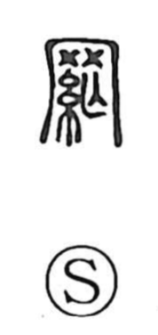

網

Uncategorized
Kun: ami | On: mou
net ・ mesh ・ network
Explanation
A phono-semantic character: the thread element signals something woven, while 罔 (mou) supplies the sound. The older graph 罔 itself is built by placing the net form 网 over 亡 as a phonetic, and originally meant a net; 網 develops that sense by adding the thread radical to show a woven mesh. Laozi says, “Heaven’s net is wide and coarse, yet nothing escapes,” expressing the idea that divine order overlooks no wrongdoing. In the same spirit, the phrase ichimo dajin—casting a single net to take a whole catch—came to mean rounding up all offenders at once.